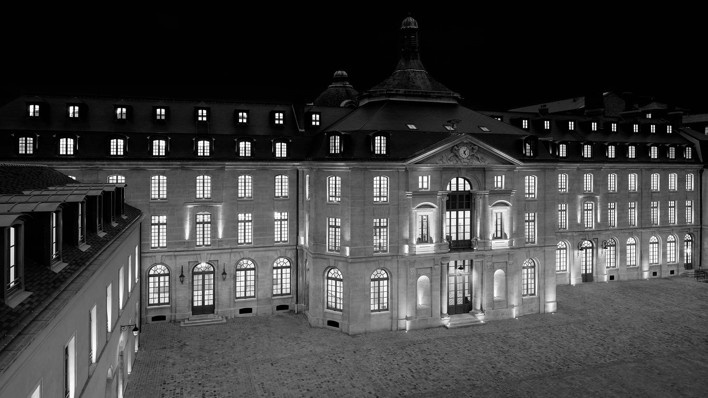
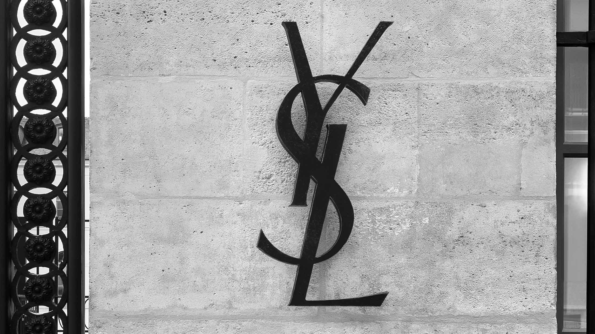
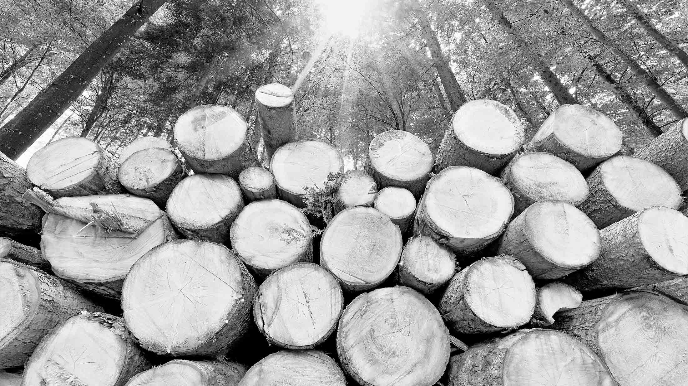
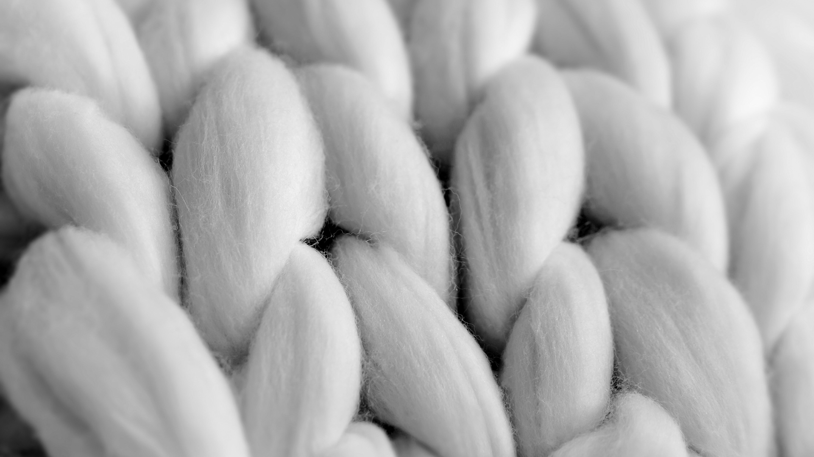
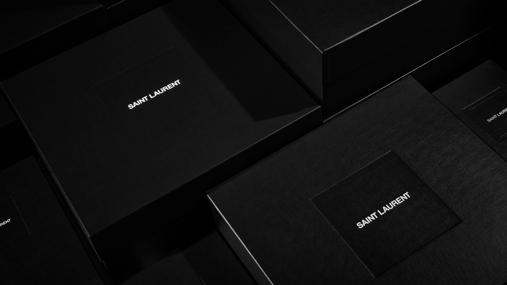
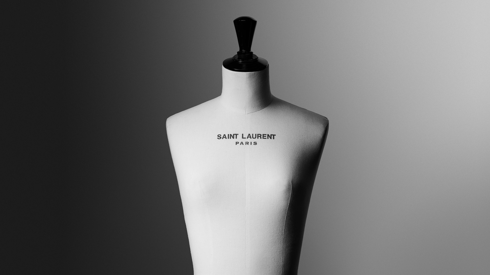
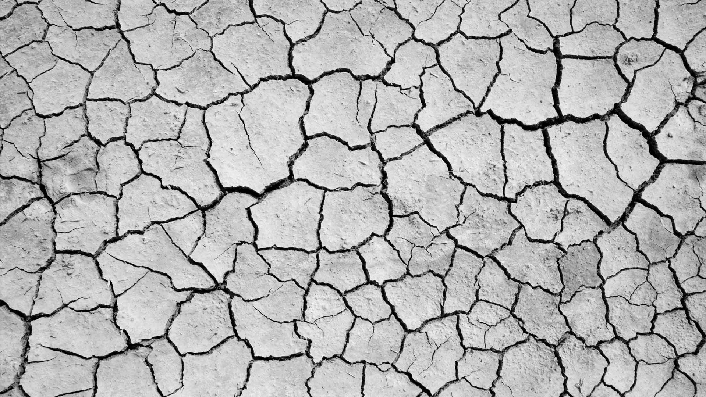

-

SUSTAINABILITY APPROACH
SAINT LAURENT’S APPROACH IS ROOTED IN A QUEST TO CONSTANTLY IMPROVE—IN MEANINGFUL AND MEASURABLE WAYS. RECOGNIZING THE COMPLEX NATURE OF SUSTAINABILITY, THE HOUSE IS ENGAGED IN A BROAD RANGE OF INITIATIVES AIMED AT PROTECTING HUMAN RIGHTS AND DIGNITY, PRESERVING THE ENVIRONMENT, AND IMPLEMENTING RESPONSIBLE SOURCING.
-

As part of the Sustainability Criterion
Kering Group, Saint Laurent is pursuing a multi-pronged strategy to establish a more sustainable and responsible concept of luxury. The House and its partners follow codes and standards developed and improved by Kering since the first Code of Ethics was established by the Group more than 25 years ago. These open source guidelines cover topics such as human rights, biodiversity, raw material sourcing and internal operations, and are regularly reviewed and updated in consultation with subject matter experts.
-

Measuring sustainability effects
SAINT LAURENT strives to increase comparability by making the environmental impact of its activities visible and quantifiable through KERING's Environmental Income and Loss (EP&L) statement . Since 2012, the tool has been used to measure carbon emissions, water consumption, air and water pollution, land use, and waste production along the entire supply chain. The impact you measure translates into monetary value, driving strategies, improving processes, and enabling you to choose the most appropriate technology.
-
Sustainability House Operations
“At SAINT LAURENT, sustainability is a fundamental promise, not a marketing move, but the house spirit.”CEO FRANCESCA BELLETTINI In addition to setting strict standards for its partners, SAINT LAURENT applies its sustainability principles and industry-leading practices within its House. energy consumption. In 2022, 100% of the electricity consumed by SAINT LAURENT ateliers, offices and stores comes from renewable sources. The house prioritizes the use of alternative energy, such as the Angers RTW atelier with a biomass heating system.
-

Sustainable raw materials
SAINT LAURENT recognizes that thorough and consistent research on raw materials and their sources is critical to reducing our environmental impact. The House aims to achieve 100% traceability of its main raw materials and 100% compliance with KERING's standards for raw materials and manufacturing processes by 2025.
-

SUSTAINABILITY SUPPLY
CHAINTo respect and protect human rights, SAINT LAURENT requires its suppliers to meet standards The House actively monitors compliance with strict standards through audits conducted by KERING or third-party auditors. All manufacturing suppliers are audited at least once, with 1,166 audits conducted in 2022. All compliance violations are handled by dedicated SAINT LAURENT teams specializing in specific product categories.
-

SUSTAINABILITY PRODUCTS
SAINT LAURENT products combine craftsmanship with sustainability. The House takes a holistic approach to design, development and manufacturing, responsibly selects materials and suppliers, ensures fair working conditions for artisans and always strives to minimize environmental impact. Le Smoking and Beyond. Favored by Yves SAINT LAURENT, the finely grained grain de poudre wool used in Le Smoking meets the highest standards of sustainability. Since 2015, this wool material has been sourced from farms in Argentina that are certified organic by the International Organic Textile Standards Standard (GOTS) and the Certification Standards for Wool Production and Products (RWS). The silk used in Le Smoking and other bespoke clothing lines is grown on GOTS certified farms in China.
-
Sustainability Circularity
SAINT LAURENT embraces the transition to a truly circular economy, recognizing the need to reimagine how resources are produced, used and reused. Change begins with leather goods. The dedicated program has mostly brought leather cutting from the SAINT LAURENT ateliers, which feature state-of-the-art technology that maximizes efficiency and minimizes waste. This centralization also allows for leftover pieces that can also be used for the production of small leather goods. It is a process initiated for Le Monogram that has expanded to other ranges.
-

Giving Sustainability : Water
“People need clean water to stay healthy and thrive. Water is the most basic essential element of life. Water is life.” Charity Founder Scott Harrison: Water